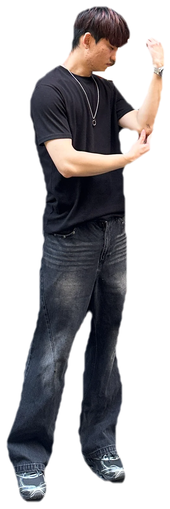

TZU HUA
WANG XART®
TZU HUA WANG® All Rights Reserved · Since 2026
TZU HUA WANG® All Rights Reserved · Since 2026
01 / 04 · Dynamic Artwork
Still the curious kid — turning talent, hua (華), into things people can touch.
ROBOTICS01
HCI02
3D PRINTING03
PSYCHOLOGY04
UX05
TOTAL CURIOSITY∞
thanks for stopping by
生於台北，在金門長大，再回到台北求學與工作。
從電機電子出發，一路走進互動設計，畢業於國立臺北科技大學互動設計系碩士班。研究成果發表於 IEEE VR 與 SIGGRAPH Asia，現在是一名機器人研究員。
專長橫跨人機互動、機器人、3D 列印原型製作與後處理、心理學與使用者經驗。
我相信好的設計與科技，能帶來前所未有的體驗，並真正回應使用它的人。
Born in Taipei, raised in Kinmen, and back in Taipei to study and work. I started in electrical and electronic engineering and moved into interaction design, earning my master’s at National Taipei University of Technology, with research published at IEEE VR and SIGGRAPH Asia. Today I work as a robotics researcher. My practice spans human–computer interaction, robotics, 3D-printed prototyping and post-processing, psychology, and user experience. I believe good design and technology can bring experiences never seen before — and truly respond to the people who use them.